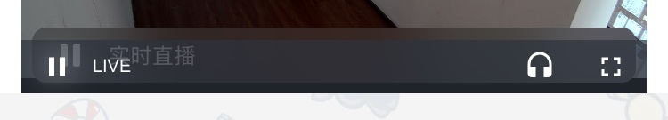

微信开发中使用VideoJS遇到的一些问题
最近接手了一个有关微信公众号开发的项目，其中有一项需求是需要实现直播、录播的视频播放功能。因此，在项目开始初就选定了 VideoJS 来完成视频播放的功能，其官方库：videojs-contrib-hls 也实现了直播视频播放的功能。
开发过程中，全程用自己的手机（iPhone）进行测试，虽然遇到了一些问题，也都基本解决掉了。但没想到项目完成后用安卓手机再次进行测试时，一个个兼容性问题全都冒出来了，瞬间以为回到了兼容 IE6 的时代….
浏览器内核
兼容性问题导致的原因，基本都是浏览器内核的不同，导致对代码解析、样式渲染的不同导致的。之前一直以为移动端的应用应该都采用的是类 webkit 内核渲染机制，更何况对于同一个应用来说渲染机制应该也会统一，结果发现自己还是太年轻。
iOS 微信
内核：WKWebView （iOS 8 及以上）
WKWebView 内核是由 iOS 8 推出的新组件，目的是给出一个新的高性能 Web View 解决方案。微信官方宣布 iOS 客户端将在 2017 年 3 月前逐步升级为 WKWebView 内核，进一步提高页面执行速度。
而对于之前的微信来说，采用的是 UIWebView 内核。UIWebView 是自 iOS 2 时 Apple 向其生态系统内提供的内核组件。
同时，为了方便开发人员进行兼容性测试，iOS 微信从 6.5.3 版本开始提供手动切换 WKWebView 和 UIWebView 的方式，使应用进行适配：
切换方法：
在微信会话列表页点击右上角“加号按钮”，选择菜单中的”添加朋友”，在添加朋友界面的搜索框中输入字符串：“:switchweb”，再点击键盘右下角搜索按钮。切换成功后会提示当前使用的内核是UIWebview或是WKWebview。校验方法：
微信内任意入口进入任意网页，在网页加载成功后向下拉动页面（或点击网页右上角菜单按钮），使之显示出地址栏，当地址栏以 “此网页由” 开头即为当前使用WKWebview，若以“网页由”则是使用的UIWebview。
更多适配内容请参考：iOS WKWebview 网页开发适配指南
安卓微信
- 微信 6.1 及以上版本：X5 Blink 内核
- 微信 5.4-6.1 之间的版本：若系统安装了 QQ 浏览器则为 X5 内核；若未安装，则为系统内核。
安卓微信里使用的是腾讯自己的浏览器内核，也就是 QQ 浏览器内核：X5 内核（X5 Blink 相当于使用 Blink 后的升级版，这里不过多解释）。就个人的使用情况来说，坑真的是太多了 = =。
遇到的问题
以下是在微信中使用视频服务遇到的一些问题，这些问题也不完全拘束于微信浏览器中，有的可能是移动端的特殊问题。
问题1. video 元素始终在页面最顶层
移动端浏览器的特殊问题，video 元素始终位于页面最顶层，无法被遮盖。设置修改 z-index 值也无效。以至于想在视频层上添加一些提示效果、弹幕效果都无法完成。
这一问题，目前官方依旧没有进行支持，也没有很完美的办法进行兼容。针对我的需求，我采用了一个折中的办法：需要进行弹窗／图片提示等效果时，将 video 元素隐藏，效果完成后再将 video 元素显示出来。如果使用 VideoJS，他自带 hide()、show() 方法进行视频的隐藏、显示。
问题2. iOS 10 以下版本视频无法在小窗（内联）模式下进行播放
在 iOS 10 以下版本中，播放视频时会强制进入全屏模式进行播放，无法在非全屏的模式下进行视频播放。这个问题目前有提供的解决方案，需要通过设置 playsinline 熟悉进行支持。
在微信等腾讯系浏览器中，可以通过以下代码设置 video 标签来兼容不同的 iOS 版本：
1 | <video webkit-playsinline playsinline></video> |
而对于其他原生应用，除了在前端层声明以上代码，还需要 iOS 开发在代码里进行以下声明才可生效：
1 | webview.allowsInlineMediaPlayback = YES; |
问题3. iOS 播放器两层控制栏的问题
这个问题是使用 VideoJS 后所产生的。在 iOS 中，播放视频时，会产生两层控制栏，如下图：

最上层带有 LIVE 文字的属于 VideoJS 的控制栏，而下一层带有 实时直播 文字的属于 iOS WKWebView 带的原生视频控制器。也就是说，在 WKWebView 下的 iOS 应用中都会有这种问题。
最初的时候我尝试了许多的方法，比如尝试取消掉原生控制器，在 <video> 标签里禁用掉 controls 属性。这种方法一开始是生效的，小屏模式下只会有 VideoJS 的控制器，但一旦进入全屏模式后再返回小屏模式，原生的控制器又出现了。
然后尝试取消掉 VideoJS 的控制器，这个直接通过修改 VideoJS 的初始化配置即可。但这样一屏蔽后，刚进入页面时，播放器是没有任何控制器的，播放按钮等都没有。而原生的控制器必须进入一次全屏状态再退出时才会产生。由于最初时没有控制器，用户根本无法播放视频更不用说进入全屏状态了。实际上这有一个用户体验不太好的解决方法：视频初始化完毕后，调用 VideoJS 的方法 play() 让视频自动播放，此时会进入全屏模式，再退出时原生控制器就会出现了。但是在移动端，没确定用户的流量环境、是否静音模式等，强制进行视频播放是一种非常不好的用户体验，因此也否决了这种方法。
最终的解决方法：
在 <video> 中增加了 webkit-playsinline playsinline 两个属性后完美解决，播放时只会有 VideoJS 的控制器了。这两个属性是 iOS 提供的用来支持视频能够小屏播放的属性，但不知为何顺带解决了这个问题。（非常魔幻，说不出理由来，但就是解决了）
问题4. 安卓微信控制器问题
安卓微信中，调用的是 X5 的播放器，控制器也是由 X5 自带的。这里不会出现两层控制栏的情况了，直接把你自己播放器的控制栏给屏蔽了。但是对于我们自己的产品来说有几个问题存在：一个是 iOS、安卓同一产品的样式不统一；另一个就是 X5 自带的播放器提供的接口太少了，几乎没有，无法实现一些业务控制。
微信官方提供的解决方法：
<video> 标签中添加一个属性：x5-video-player-type="h5"，即启用 H5 播放器，此时视频播放器就是你自己设置的控制器了。
问题5. 安卓微信全屏及小窗模式的控制问题
这部分是最头疼的问题，因为基本处于无解状态。首先介绍一下安卓微信独有的“小窗模式”，在前文中，小窗模式指的是非全屏状态的页面内嵌模式，安卓微信取名的“小窗模式”实际就是“画中画模式”，为了加以区分，下文以“画中画模式”指代安卓微信的“小窗模式”。
在安卓微信里，将视频进行全屏模式后，右上角会有一个“小屏”按钮，点击后便进入了画中画模式，视频单独脱离文档流，浮在页面上方，并处于页面最顶层。最关键的问题是，微信官方并没有提供对“画中画模式”的技术接口，不能通过代码来隐藏、退出、关闭这个模式。
同时，安卓微信里进入全屏后，无法通过调用 VideoJS 中的 exitFullscreen() 方法退出全屏，而在 iOS 端是能够退出全屏的。
采取的折中解决方法：
实际上，我有一项需求是视频试看功能，用户可以试看该视频的前几分钟，超过时间后终止播放视频。在 W3C 文档中，是有对视频播放范围限制的方法（MDN-使用HTML5音频和视频），但我这边是对直播视频流进行处理，无法对媒体 URI 进行处理，只能强制在前端层进行处理。
当时想的方法是：通过事件或定时器监听，播放到指定时间后，退出全屏状态（如果处于全屏状态的话），将视频中止、隐藏即可。但就安卓微信来看，无法退出全屏状态，同时还多了一个无法控制的画中画模式。
经过自己大量方法、事件的测试，最终的代码逻辑如下（用到了 VideoJS 的方法、事件）：
1 | // let player = videojs('viode') |
安卓微信全屏模式时，将视频 URL 重置为空，再将其隐藏掉，成功的退出了全屏状态，此时自己再对页面进行相应处理即可。而即使处于画中画模式，虽然无法退出，视频也不能再进行往下播放（只能妥协至此）。增加 error 事件，是对视频 URL 置空时报错的处理。
Feature or Bug？
X5 Blink 给出了自身视频的部分 feature （bug）：
- 禁止视频自动播放
- 无法屏蔽全屏后页面上的操作按钮（下载、分享、小窗）
- 无法进行视频清晰度切换
- 视频播放完后会插入广告或推荐部分视频